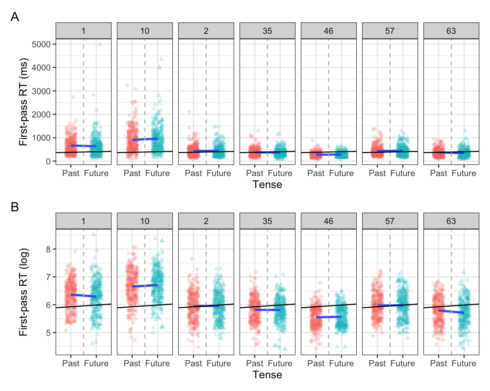
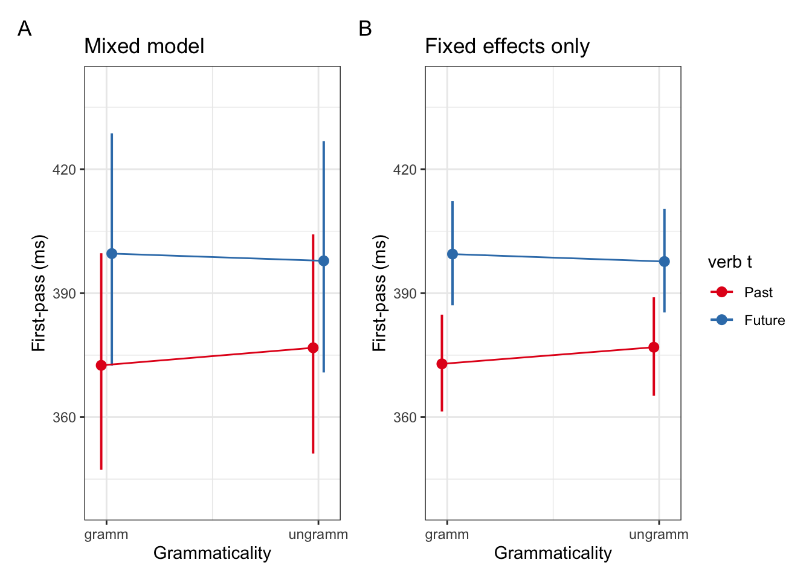

# suppress scientific notation
options(scipen=999)
options(pillar.sigfig = 5)9 Random intercepts
What, why, when, and how?
This chapter covers Chapter 14 'Mixed Models 1: Conceptual Introduction’ (until Section 14.8; Winter, 2019), Winter (2014) (until page 16), and Sections 8.1-8.3 in Sonderegger (2023). We will be using the data from Biondo et al. (2022).
Learning Objectives
Today we will learn…
- how to run our fixed mixed effects model with random intercepts
- how to interpret random intercepts
Set-up environment
Our first steps are to set-up our environment. The next two chunks are not necessary, but I use them to set some preferences, such as supressing scientific notation, and establishing a function to nicely format p-values.
Code for a function to format p-values
library(broman)
# function to format p-values
format_pval <- function(pval){
dplyr::case_when(
pval < .001 ~ "< .001",
pval < .01 ~ "< .01",
pval < .05 ~ "< .05",
TRUE ~ broman::myround(pval, 3)
)
}Load packages
We’ll also need to load in our required packages. Hopefully you’ve already install the required packages (if not, go to Chapter 3).
# load libraries
pacman::p_load(
tidyverse,
here,
broom,
janitor,
ggeffects,
sjPlot,
# new packages:
lme4,
lmerTest,
broom.mixed,
lattice)Here I also globally set my preferred ggplot2 theme so that all of my plots are formatted how I like them, without have to repeat the code for each plot. This is completely optional.
# set preferred ggplot2 theme
theme_set(theme_bw() + theme(plot.title = element_text(size = 10)))Resolve conflicts
Sometimes different packages have functions with the same name. In these cases, when you call such a function the package that was last loaded will be used. Both lme4 and lmerTest have a function lmer(), but for now we want to use the lme4 version. We’ll discuss the differences later, but for now let’s make sure that lme4 is used. We could also do this each time we call the function by using lme4::lmer(), but this can become cumbersome. Instead, let’s explicitly define lme4::lmer() as the function version that should be used.
lmer <- lme4::lmerLoad data
Now let’s load in our dataset from Biondo et al. (2022).
df_biondo <-
read_csv(here("data", "Biondo.Soilemezidi.Mancini_dataset_ET.csv"),
locale = locale(encoding = "Latin1") ## for special characters in Spanish
) |>
clean_names() |>
mutate(gramm = ifelse(gramm == "0", "ungramm", "gramm"))And take a look at the data:
head(df_biondo)# A tibble: 6 × 13
sj item adv_type adv_t verb_t gramm roi label fp gp tt ri
<chr> <dbl> <chr> <chr> <chr> <chr> <dbl> <chr> <dbl> <dbl> <dbl> <dbl>
1 1 54 Deic Past Past gramm 1 En la c… 1173 1173 1173 0
2 1 54 Deic Past Past gramm 2 ayer te… 474 474 474 0
3 1 54 Deic Past Past gramm 3 los car… 910 910 910 0
4 1 54 Deic Past Past gramm 4 encarga… 1027 1027 1027 0
5 1 54 Deic Past Past gramm 5 muchas … 521 521 521 0
6 1 54 Deic Past Past gramm 6 al prov… 1029 1029 1029 0
# ℹ 1 more variable: ro <dbl>?tbl-data_dictionary gives an overview of the variables in the dataset. Relevant for this chapter are the variables fp, verb_t, gramm, and roi. For the tasks at the end of the chapter, you’ll also be working with tt and adv_t.
| variable | description | type | class |
|---|---|---|---|
| `sj` | participant ID | grouping | factor |
| `item` | item ID | grouping | factor |
| `adv_type` | adverb type: `Deic`tic (e.g., on Monday), `Non-deic`tic (e.g., last Monday) | independent | factor |
| `adv_t` | adverb tense: `Past`, `Future` | independent | factor |
| `verb_t` | verb tense: `Past`, `Future` | independent | factor |
| `gramm` | grammaticality: `gram`atical or `ungram`atical | independent | categorical |
| `roi` | sentence region (Region Of Interest); `2` = adverb, `4` = verb | independent | ordered factor |
| `label` | sentence region text | independent | string |
| `fp` | first-pass reading time (summation of fixations from when a reader first fixates on a region to when they first leave that region) | dependent | continuous |
| `gp` | regression path duration/go-past time | dependent | continuous |
| `tt` | total reading time (summation of all fixations within a region during a trial) | dependent | continuous |
| `ri` | regressions in (whether there was at least one regression into a region) | dependent | binomial |
| `ro` | regressions out (whether there was at least one regression out of a region) | dependent | binomial |
9.1 Review
Up until now, we’ve learned about the equation of a line (Section 1.3), simple (?sec-simple-regression) and multiple linear regression (?sec-multiple-regression), and logisitic regression (?sec-logistic-regression). We’ve also learned about centering and standardizing continuous predictors (?sec-continuous-predictors), and contrast coding categorical predictors (?sec-contrast-coding). We discussed non-linear transformations for dependent variables in linear regression, such as log-transforming data with a positive skew (?sec-log-transformation), and how to interpret the coefficients of logistic regressions in log-odds, odds, and probabilities (?sec-log-odds). If any of these topics don’t sound familiar to you, I suggest going back and reviewing the relevant chapter. If you feel you have a somewhat good handle on these topics, then proceed.
9.1.1 Model equation
Recall the equation of multiple linear regression model, given in Equation \(\ref{eq-mult_reg}\).
\[\begin{equation} y_i = b_0 + b_1x_i + b_2x_1 + ... +e_i \label{eq-mult_reg} \end{equation}\]
Where the value of some value \(y\) (indexed by \(i\)) equals the intercept (\(b_0\)) plus the corresponding value \(x\) (indexed by \(i\)) of our first predictor (\(b_1\)) plus that of our second predictor (\(b_2\)), plus the corresponding error \(e\) (indexed by \(i\)), which is simply the difference between the predicted value and the observed value (i.e., residual). Here, \(i\) indicates values corresponding to the same observation \(i\). Such a model assumes that all possible groups within our data have the same intercept and the same slope.
The estimated parameters, i.e., our coefficients (\(b_0\), \(b_1\), \(b_2\)), are our fixed effects. The estimated values model the mean/population-level effects in our data. Mixed models try to model some of the variance, i.e., residual error (\(e_i\)), by including random effects. Though we will never completely get rid of the unexplained variance in our model (\(e\)), we can try to minimise it by including some expected variation present in our data. When, why, and how we can do that is the topic of this chapter.
9.2 Mixed models: why, when, and how?
Mixed models are ‘mixed’ in that they have both fixed and random effects. Fixed effects are our predictors (i.e., independent variables), the variance in the data we are trying to explain and generalise beyond our data. We would expect the model estimates of our fixed effects to be similar if we were to re-run our experiment with different participants, and even with different linguistic items that contain the same manipulation.
Random effects take into account the random variance, i.e., the variance in our data we are not trying to explain and that we would not expect to replicate across experiments. This is because they are dependent on e.g., the participants or specific linguistic items we collected our data from. Whether or not we have non-independence in our data depends on how/from where we collected our data. It’s common for experiments to involve multiple observations per participant and for the same stimuli (i.e., items) to be presented across participants. In production studies for example, participants may be asked to read the same sentences or words out loud. In corpus studies, data may be collected from several sources with multiple data points collected from the same text and/or author.
Take participants for example: different people will tend to have different reading speeds, fundamental frequencies, and even different effects of our critical manipulations. That is to say, data points from a certain participant will tend to be grouped together since one participant might tend to be a faster reader than another participant, or have a higher fundamental frequency than another. The same can be said for experimental items: one item (e.g., Yesterday/Tomorrow, the workers went/will go to the bakery) might tend to have longer reading times or a larger effect of grammaticality than another item for one reason or another.
Of course, participant and item are not the only sources of non-independence in linguistic data. Winter & Grice (2021) provides a description of other possible sources of non-independence in language research, such as phonetic production studies (speaker, exact repetitions), and corpora (author, text, register). In essence, random effects are grouping factors in our data across beyond which we want to generalise our observed effects.
9.2.1 Why?
Simply put, because of the independence assumption and Type I (alpha) error! The “sexy” answer: Not accounting for non-independence in our data can lead to unreliable p-values.
9.2.2 When?
Whenever you have observations (i.e., data points) that are somehow linked. One such case is when you have a repeated measures design, as is often the case in linguistic experiments: each participant sees the same experimental items. Therefore, we have multiple (non-independent) observations per participant, and also multiple (non-independent) observations per item. See Section 3 in Winter & Grice (2021) for a discussion of sources of dependence beyond participant and item in different subfields of language research.
Let’s look at an example. We perviously used the data from from Biondo et al. (2022), which contains data from an eye-tracking during reading experiment with a repeated measures design. We’re interested in whether reading times were affected by adverb-tense congruence (grammaticality) and tense (past vs. future). Let’s review your model from Report 1.
9.2.2.1 An example: report 1 model
In the first report for this class, you fit a model of first-pass reading times from Biondo et al. (2022) with the predictors (i.e., fixed effects) grammaticality, tense, and their interaction. The resulting coefficients should look something like Table 9.1.
Code for data prep
# prep data for model
df_deic_verb <-
df_biondo |>
# filter for verb region (roi = 4) and Deictic adverbs
filter(roi == 4,
adv_type == "Deic") |>
# set predictors as factors for contrast coding
mutate(gramm = as_factor(gramm),
verb_t = as_factor(verb_t))
# sum contrast coding: gramm and Past = -0.5
contrasts(df_deic_verb$gramm) <- c(-0.5, 0.5)
contrasts(df_deic_verb$verb_t) <- c(-0.5, 0.5)
# check contrasts
# contrasts(df_deic_verb$gramm)
# contrasts(df_deic_verb$verb_t)fit_lm_fp <-
lm(log(fp) ~ gramm*verb_t,
data = df_deic_verb)Code for table
# model
# print model coefficients only
tidy(fit_lm_fp) |>
kable(digits = 3) |>
kable_styling()| term | estimate | std.error | statistic | p.value |
|---|---|---|---|---|
| (Intercept) | 5.957 | 0.008 | 741.568 | 0.000 |
| gramm1 | 0.003 | 0.016 | 0.193 | 0.847 |
| verb_t1 | 0.061 | 0.016 | 3.809 | 0.000 |
| gramm1:verb_t1 | -0.015 | 0.032 | -0.474 | 0.635 |
We see there is a significant effect of verb tense (Est = 0.06, t = 3.9, p < .001), where the slope (and therefore the t-value) is positive. Since we coded Past as -0.5 and Future as +0.5, a positive slope means there were longer first-pass reading times for the Future condition, which we also saw when we plotted the raw data. So, this means that future-tensed verbs elicited longer first-pass reading times, and that the congruence of the verb with a preceding temporal adverb did not affect first-pass reading times. When we back-transform the log-transformed predicted values per condition into milliseconds we get Table 9.2.
Click here to see code for the table
ggpredict(fit_lm_fp, terms = c("verb_t", "gramm")) |>
as_tibble() |>
rename(
tense = x,
gramm = group
) |>
relocate(tense, gramm) |>
knitr::kable(digits = 3) |>
kableExtra::kable_styling()| tense | gramm | predicted | std.error | conf.low | conf.high |
|---|---|---|---|---|---|
| Past | gramm | 372.892 | 0.016 | 361.354 | 384.798 |
| Past | ungramm | 376.912 | 0.016 | 365.202 | 388.998 |
| Future | gramm | 399.460 | 0.016 | 387.069 | 412.249 |
| Future | ungramm | 397.658 | 0.016 | 385.329 | 410.382 |
But if we look at each participants observations, e.g., their first-pass reading times for past versus future tensed verbs, we see there is quite some variation in their means and in the effect of tense. Figure 10.2 shows by-participant variation in first-pass reading times for past and future tenses from seven example participants, in raw milliseconds (A) and log-transformed first-pass reading times (B). In each plot, the vertical grey dotted line indicates \(x = 0\) (because we used sum contrast coding \(x = 0\) is smack dab in the middle between past and future), the blue line represents the by-participant intercept and slope, while the black line represents the intercept and slope from our model. The black line therefore represents the population-level values, i.e., the mean of all first-pass reading times and the mean effect of tense.
Code for plots
fig_biondo_sj_ms <-
df_biondo |>
filter(sj %in% c(1,10,2,35,46,57,63)) |>
mutate(verb_t = factor(verb_t, levels = c("Past", "Future"))) |>
ggplot() +
aes(x = verb_t, y = fp,
colour = verb_t,
shape = verb_t) +
facet_wrap("sj", nrow = 1) +
# Put the points on top of lines
geom_point(position = position_jitter(0.2),
alpha = .2) +
stat_smooth(aes(group = 1), method = "lm") +
# geom_boxplot(colour = "black", alpha = 0) +
labs(y = "First-pass RT (ms)",
x = "Tense") +
geom_vline(xintercept = 1.5, colour = "grey", linetype = "dashed")+
theme(legend.position = "none") +
geom_abline(
intercept = exp(coef(fit_lm_fp)[1]-(coef(fit_lm_fp)[3]*1.5)) ,
slope = (exp(coef(fit_lm_fp)[1]+(coef(fit_lm_fp)[3]*0.5)) - exp(coef(fit_lm_fp)[1]+(coef(fit_lm_fp)[3]*-0.5)))
)
fig_biondo_sj_log <-
df_biondo |>
mutate(verb_t = factor(verb_t, levels = c("Past", "Future"))) |>
filter(sj %in% c(1,10,2,35,46,57,63)) |>
ggplot() +
aes(x = verb_t, y = log(fp),
colour = verb_t,
shape = verb_t) +
facet_wrap("sj", nrow = 1) +
# Put the points on top of lines
geom_point(position = position_jitter(0.2),
alpha = .2) +
stat_smooth(aes(group = 1), method = "lm") +
labs(y = "First-pass RT (log)", x = "Tense") +
geom_vline(xintercept = 1.5, colour = "grey", linetype = "dashed") +
theme(legend.position = "none") +
geom_abline(
intercept = coef(fit_lm_fp)[1]-(coef(fit_lm_fp)[3]*1.5),
slope = coef(fit_lm_fp)[3])
# print
fig_biondo_sj_ms / fig_biondo_sj_log + theme(legend.position = "none") +
plot_annotation(tag_levels = "A")
Note in Figure 10.2 that there is variation in the central tendency of observations per participant. For example, Participant 10 had overall longer first-pass reading times than the other participants, as did Participant 1. Conversely, some participants had overall faster first-pass reading times, such as Participants 46 and 63. Meanwhile, some participants were pretty near the grand mean, like Participants 2 and 57. This is not to mention the differences in the slopes: some participants have a flatter slope than the model’s fitted slope (e.g., Participants 35 and 46), while some even have a slope in the opposite direction (e.g., Participants 1 and 63).
Figure 9.2 shows the same trend across a sample of seven experimental items. Some by-item intercepts were similar to the model intercept (e.g., items 1 and 85), while some deviated (e.g., item 10 and 26).
Code for plots
fig_biondo_item_ms <-
df_biondo |>
filter(item %in% c(1,10,26,33,58,101,85)) |>
mutate(verb_t = factor(verb_t, levels = c("Past", "Future"))) |>
ggplot() +
aes(x = verb_t, y = fp,
colour = verb_t,
shape = verb_t) +
facet_wrap("item", nrow = 1) +
# Put the points on top of lines
geom_point(position = position_jitter(0.2),
alpha = .2) +
stat_smooth(aes(group = 1), method = "lm") +
# geom_boxplot(colour = "black", alpha = 0) +
labs(y = "First-pass RT (ms)",
x = "Tense") +
geom_vline(xintercept = 1.5, colour = "grey", linetype = "dashed")+
theme(legend.position = "none") +
geom_abline(
intercept = exp(coef(fit_lm_fp)[1]-(coef(fit_lm_fp)[3]*1.5)) ,
slope = (exp(coef(fit_lm_fp)[1]+(coef(fit_lm_fp)[3]*0.5)) - exp(coef(fit_lm_fp)[1]+(coef(fit_lm_fp)[3]*-0.5)))
)
fig_biondo_item_log <-
df_biondo |>
mutate(verb_t = factor(verb_t, levels = c("Past", "Future"))) |>
filter(item %in% c(1,10,26,33,58,101,85)) |>
ggplot() +
aes(x = verb_t, y = log(fp),
colour = verb_t,
shape = verb_t) +
facet_wrap("item", nrow = 1) +
# Put the points on top of lines
geom_point(position = position_jitter(0.2),
alpha = .2) +
stat_smooth(aes(group = 1), method = "lm") +
labs(y = "First-pass RT (log)", x = "Tense") +
geom_vline(xintercept = 1.5, colour = "grey", linetype = "dashed") +
theme(legend.position = "none") +
geom_abline(
intercept = coef(fit_lm_fp)[1]-(coef(fit_lm_fp)[3]*1.5),
slope = coef(fit_lm_fp)[3])
# print
fig_biondo_item_ms / fig_biondo_item_log + theme(legend.position = "none") +
plot_annotation(tag_levels = "A")
If we were to gather by-participant and by-item slopes from all participants and items and plotted them together, we would get Figure 9.3 (where colour indicates direction of slope: positive or negative).
fig_item_sj_fp_meansWe see saw in seven examples in Figure 10.2 and (fit-pooling_item?), and across all participants and items in Figure 9.3, that there is a lot of variability in terms of the overall mean (intercept, which would correspond to the grey dotted line) across items and participants, as well and in the differences between past and future verbs. Firstly, focusing on the intercept (values crossing the vertical grey dotted line), there is a range of approximately 300 to 675 ms between items, and a range of 250 and 875 between participants. Compared to the overall mean of 440.5ms, this is quite some variation. Looking now at the effect of tense, i.e. the slope, we see not only differences in the magnitude of effects between items and participants (i.e., how steep the slope is), but also in the direction of the effect: There are quite a few items and participants that have a slope in the opposite direction of the overall mean in black, which is positive.
So why does it matter that there’s variability by item and by participant? All of this data was already included in our model, and so it was taken into consideration when calculating standard error and confidence intervals, so why should this matter? The answer is simply: dependence of data points affects the number of observations, which in turn affects our degrees of freedom and measures like standard error and confidence intervals. In essence, it alters our measures of uncertainty in the presence or absence of a reliable effect.
To drive this point home, let’s look at an ordered plot of by-item and -participant intercepts with 95% confidence intervals (Figure 9.4) and boxplots of the raw observations of first-pass reading times at the verb region (Figure 9.5). In Figure 9.4, we see the intercept value on the x-axis, again highlighting the range of varying intercept values for across items and participants. In Figure 9.5, we see the range in the spread of values, with wider inter-quartile ranges especially for particpants with higher a median first-pass reading time. This was also represented in Figure 9.4 by wider 95% confidence intervals for both items and participants with higher intercepts.

Code for plots
fig_sj_boxplot <-
df_deic_verb |>
mutate(sj_median = median(fp, na.rm = T), .by=sj) |>
ggplot() +
aes(x = reorder(sj, sj_median), y = fp) +
labs(title = "By-participant boxplot of first-pass reading times at the verb",
y = "First-pass RT (ms)") +
geom_boxplot() +
theme(
axis.ticks.x = element_blank(),
axis.text.x = element_blank(),
axis.title.x = element_blank()
)
fig_item_boxplot <-
df_deic_verb |>
mutate(item_median = median(fp, na.rm = T), .by=item) |>
ggplot() +
aes(x = as_factor(reorder(item, item_median)), y = fp) +
labs(title = "By-item boxplot of first-pass reading times at the verb",
y = "First-pass RT (ms)") +
geom_boxplot() +
theme(
axis.ticks.x = element_blank(),
axis.text.x = element_blank(),
axis.title.x = element_blank()
)
fig_sj_boxplot / fig_item_boxplot +
plot_annotation(tag_levels = "A")In order for our model to take this by-participant and by-item variance into account, we can add by-participant and by-item random terms in a mixed model.
9.2.3 How?
We can add random intercepts and random slopes per grouping factor. Random intercepts would correspond to the average \(y\)-value (if we’re using sum contrast coding) per level of a grouping factor, e.g., per participant. Random slopes would give us the fitted effect per level of a grouping factor, e.g., per participant. So, if we fit a model with by-participant random intercepts and slopes, our model will also fit an intercept and slope per participant, thereby taking the by-participant variance into account. Importantly, each grouping factor must be a factor (i.e., categorical), and each level of this grouping factor must have sufficient observations. In this chapter we’ll focus on random intercepts, and we will be running what’s called random-intercept-only or intercept-only random effects models. A word of warning: such models can lead to inflated Type I (alpha) error, i.e., a false positive result (Barr et al., 2013). Mixed models with intercept-only random effects are often the final model reported because of something called convergence issues, meaning the model cannot be fit because of a lack of computational power or too few observations “per cell”.
The lme4 (lme4-package?) or lmerTest (lmerTest-package?) packages are commonly used to produced mixed models in R. The main difference between the two is that lmerTest produces p-values while lme4 does not. The coefficients from the two packages should be otherwise identical. For a more in-depth discussion on p-values in mixed models, see for example Section 8.5.1.3 (t/F-tests with approximate df) in Sonderegger (2023). We’ll be using the lme4 package to start off with to fit mixed models with the lmer() function, which uses similar sytax to the lm() function:
\[\begin{align} dv &\sim 1 + iv, data = data\_name \label{eq-lm}\\ dv &\sim 1 + iv + (1 + iv|gf), data = data\_name \label{eq-lmer} \end{align}\]
Where dv is our dependent variable (measure, outcome variable), iv is our independent variable(s) (predictor variable), and gf refers to a grouping factor. The 1s stand-in for intercept, so 1 + iv means fit an intercept (1) and slope (iv). Recall that the 1 is optional, and we often don’t write it in our models. We see a 1 in the random effects structure, however: (1 + iv|gf). This represents random effects for a grouping factor (gf): We are fitting an intercept and slope per level of this grouping factor. Basically, this model is a mixed model fit to some dependent variable with an independent variable(s) as fixed effect, and by-grouping factor random intercepts and slopes for our fixed effect iv. You could replace the highlighted terms in the last sentence with the names of your own variables in a model to describe your formula.
This might all sound abstract at the moment, but it helps to see it in action. For the rest of the chapter we’ll focus on random intercepts, and we will get to random slopes in the next chapter. Let’s now fit and explore some mixed models.
9.3 By-participant random intercepts
Recall the equation in Equation \(\ref{eq-mult_reg}\). To model first-pass reading times as a function of verb tense and grammaticality, we would get Equation \(\ref{eq-mixed_model}\). Adding random intercepts for a single grouping factor would give us Equation \(\ref{eq-mixed_model}\).
\[\begin{align} fp &= \beta_0 + \beta_{verb\_t}x + \beta_{gramm}x \label{eq-biondo_average} \\ fp_i &= \beta_0 + \alpha_{j[i]} + \beta_{verb\_t}x + \beta_{gramm}x + e_i \label{eq-mixed_model} \end{align}\]
Where \(\alpha\) represents the deviation of some level \([i]\) in some group \(j\) from the population-level intercept (\(b_0\)). In other words, we assume here that there is some grouping factor within our data structure and that each level of this grouping factor will have an intercept value that deviates somewhat from the population-level intercept. As we saw above, the data from Biondo et al. (2022) contains non-independent observations from 60 participants. If we wanted to take that into considerat
A simplified version in is the model for the average participant in our data, where the intercept is the average first-pass reading time across all participants, and the slopes for tense and grammaticality are also the average effect of each across all participants. models the first-pass reading time with varying intercepts for participant (sj), where \(\beta_0 + \alpha_{sj[i]}\) represents the intercept for participants. models the first-pass reading time for participant (sj) 60, where \(\beta_0 + \alpha_{sj[60]}\) represents the intercept for participant 60.
\[\begin{align} fp &= \beta_0 + \alpha_{sj[i]} + \beta_1x + \beta_2x \label{eq-biondo-sj} \\ fp &= \beta_0 + \alpha_{sj[60]} + \beta_1x + \beta_2x \label{eq-biondo-sj60} \end{align}\]
Let’s continue with our model from Report 1, with log-transformed first-pass reading times (fp) as dependent variable, grammaticality (gramm), verb tense (verb_t), and their interaction as fixed effects, and by-participant (sj) random intercepts:
fit_lmm_fp_sj <-
lmer(log(fp) ~ gramm*verb_t +
(1|sj),
data = df_deic_verb)We see the only difference between this code and that above is that we are using lmer() instead of lm(), and that we have added + (1|sj) to the model equation.
What happens if we try to run this model without + (1|sj)?
fit_lmm_fp_sj <-
lmer(log(fp) ~ gramm*verb_t,
data = df_deic_verb)Error: No random effects terms specified in formulaWe get an informative error message: Error: No random effects terms specified in formula. The lmer() function requires a random effects structure, so if it is missing a model will not be fit.
9.3.1 Inspecting your model output
The summary() function also worth lmer() models, but there are some differences in the output.
summary(fit_lmm_fp_sj)Linear mixed model fit by REML ['lmerMod']
Formula: log(fp) ~ gramm * verb_t + (1 | sj)
Data: df_deic_verb
REML criterion at convergence: 4479.1
Scaled residuals:
Min 1Q Median 3Q Max
-4.0560 -0.6427 -0.0419 0.6168 4.0901
Random effects:
Groups Name Variance Std.Dev.
sj (Intercept) 0.06573 0.2564
Residual 0.18030 0.4246
Number of obs: 3795, groups: sj, 60
Fixed effects:
Estimate Std. Error t value
(Intercept) 5.957102 0.033809 176.199
gramm1 0.003466 0.013787 0.251
verb_t1 0.062209 0.013787 4.512
gramm1:verb_t1 -0.015741 0.027573 -0.571
Correlation of Fixed Effects:
(Intr) gramm1 vrb_t1
gramm1 0.000
verb_t1 0.000 -0.002
grmm1:vrb_1 0.000 0.000 0.002Similar to the model output from a lm() model, we have the model formula at the top. We also have have the distribution of the residuals, which look quite normally distributed. Our fixed effects are under Fixed Effects (instead of Coefficients in lm() output). Here you might notice we don’t have any p-values, we’ll talk about why below. Lastly, instead of information about model fit (e.g., \(R^2\)), we have Correlation of Fixed Effects, which is exactly what the title suggests: the correlation between fixed effects. This corresponds to the assumption of multicollinearity, and should have small values.
There are two other main differences near the top: REML criterion at convergence: ..., and our Random effects. We won’t be getting into REML in this course, but know that it is important when doing model comparisons.
REML: restricted maximum likelihood
Sonderegger (2023), Section 8.5 and Box 8.4
We can use the broom.mixed package to extract tidy coefficient summaries from lmer() models, similar to the broom package for lm() models. The broom.mixed package also has a function tidy() for this purpose. This function also has an optional argument effects which can be used to control what information you extract from your model:
effects = fixed: fixed-effect parameterseffects = ran_pars: random effects of our model (standard deviations of our random effect terms)
Click to see code for table
tidy(fit_lmm_fp_sj, effects = "fixed") |>
kable() |>
kable_styling()| effect | term | estimate | std.error | statistic |
|---|---|---|---|---|
| fixed | (Intercept) | 5.9571020 | 0.0338089 | 176.1991812 |
| fixed | gramm1 | 0.0034662 | 0.0137866 | 0.2514208 |
| fixed | verb_t1 | 0.0622091 | 0.0137873 | 4.5120666 |
| fixed | gramm1:verb_t1 | -0.0157409 | 0.0275733 | -0.5708757 |
Click to see code for table
tidy(fit_lmm_fp_sj, effects = "ran_pars") |>
kable() |>
kable_styling()| effect | group | term | estimate |
|---|---|---|---|
| ran_pars | sj | sd__(Intercept) | 0.2563809 |
| ran_pars | Residual | sd__Observation | 0.4246230 |
We can also use the VarCorr() function from lme4 to extract the variance components (i.e., random effects) from our model summary:
print(VarCorr(fit_lmm_fp_sj),comp=c("Variance","Std.Dev.")) Groups Name Variance Std.Dev.
sj (Intercept) 0.065731 0.25638
Residual 0.180305 0.42462 But what exactly do these random effect parameters mean? We see the estimated degree of by-participant intercept variability is approximately 0.07 has a standard deviation of approximately 0.26.
9.3.2 lmerTest
fit_lmm_fp_sj <-
lmerTest::lmer(log(fp) ~ gramm*verb_t +
(1|sj),
data = df_deic_verb)9.3.3 Comparing to simple regression
Visualise both models’ coefficents
fig_lmer <- plot_model(fit_lmm_fp_sj, type = "int") +
geom_line(position = position_dodge(0.1)) +
labs(title = "Mixed model",
x = "Grammaticality",
y = "First-pass (ms)") +
theme_bw() +
ylim(340, 440)
fig_lm <- plot_model(fit_lm_fp, type = "int") +
geom_line(position = position_dodge(0.1)) +
labs(title = "Fixed effects only",
x = "Grammaticality",
y = "First-pass (ms)") +
theme_bw() +
ylim(340, 440)
fig_lmer + fig_lm + plot_annotation(tag_levels = "A") +
plot_layout(guides = "collect")
9.4 Adding another grouping factor
So far we’ve fit the data using one grouping factor: participant. The experimental design in (biondo_tomorrow_2022?) used repeated measures, however. This means that each participant was presented items from multiple items. In other words, each item (item) was presented to multiple participants (sj). This is a crossed-design, also called a factorial design, where both participant and item are grouping factors. We should be using crossed random effects, i.e., two grouping factors. We can do this by simply adding another + (1|gf) to our model syntax.
fit_lmm_fp_sj_item <-
lmer(log(fp) ~ gramm*verb_t +
(1|sj) +
(1|item),
data = df_deic_verb)This is now a model with by-participant and by-item random intercepts. Let’s inspect this model as we did with our model with by-participant random intercepts. This amounts to Equation \(\ref{eq-mixed_model_k}\), where we have varying intercepts (\(\alpha\)) for two grouping variables, \(j\) and \(k\).
\[\begin{align} fp_i &= \beta_0 + \alpha_{j[i]} + \alpha_{k[i]}+ \beta_{verb\_t}x + \beta_{gramm}x + e_i \label{eq-mixed_model_k} \end{align}\]
If we take \(j\) to represent participants and \(k\) to represent items, then the \(j\) in \(\alpha_{j[i]}\) has 60 levels (1-60, because we have 60 participants), and \(k\) in \(\alpha_{j[i]}\) has 96 levels (1-96, because we have 96 items). And \(i\) has 3795 levels, because there are 3795 observations in our model (which we will see in a moment).
9.5 Exploring our random effects estimates
- what we saw in our model summary were the variance components
- a description of the variance of our by-item and by-participant random intercepts
- our model also contains intercept estimates for each level of item and participant
- we can extract the intercept estimates
- or we extract their deviance from the model intercept
9.5.1 Extracting fixed effects
- we’ve already used
coef()to extract fixed effect estimates fromlmobjects
coef(fit_lm_fp) (Intercept) gramm1 verb_t1 gramm1:verb_t1
5.957251870 0.003101061 0.061204153 -0.015245374 - to extract our fixed effect estimates from
lmerobjects we needfixef()
fixef(fit_lmm_fp_sj_item) (Intercept) gramm1 verb_t1 gramm1:verb_t1
5.95640363 0.00321152 0.06189237 -0.01431578 - or we can append
$coefficientsto the model summary
summary(fit_lmm_fp_sj_item)$coefficients |>
as_tibble()# A tibble: 4 × 3
Estimate `Std. Error` `t value`
<dbl> <dbl> <dbl>
1 5.9564 0.036790 161.90
2 0.0032115 0.013025 0.24657
3 0.061892 0.013025 4.7517
4 -0.014316 0.026049 -0.549569.5.1.1 Extract random intercept estimates
coef()behaves very differently withlmerobjects, extracting the random effects estimates per level
coef(fit_lmm_fp_sj_item) |> pluck("item") |> head() (Intercept) gramm1 verb_t1 gramm1:verb_t1
1 6.022184 0.00321152 0.06189237 -0.01431578
2 5.761268 0.00321152 0.06189237 -0.01431578
3 5.854873 0.00321152 0.06189237 -0.01431578
4 6.056862 0.00321152 0.06189237 -0.01431578
5 6.138213 0.00321152 0.06189237 -0.01431578
6 6.331058 0.00321152 0.06189237 -0.01431578which outputs a
listobject, with one data frame foritemand one forsjwe can extract just one or the other (
head()is for presentation purposes):
coef(fit_lmm_fp_sj_item) |> pluck("item") |>
rownames_to_column(var = "item") |> head() item (Intercept) gramm1 verb_t1 gramm1:verb_t1
1 1 6.022184 0.00321152 0.06189237 -0.01431578
2 2 5.761268 0.00321152 0.06189237 -0.01431578
3 3 5.854873 0.00321152 0.06189237 -0.01431578
4 4 6.056862 0.00321152 0.06189237 -0.01431578
5 5 6.138213 0.00321152 0.06189237 -0.01431578
6 6 6.331058 0.00321152 0.06189237 -0.01431578coef(fit_lmm_fp_sj_item) |> pluck("sj") |>
rownames_to_column(var = "sj") |> head() sj (Intercept) gramm1 verb_t1 gramm1:verb_t1
1 07 5.869627 0.00321152 0.06189237 -0.01431578
2 09 5.782527 0.00321152 0.06189237 -0.01431578
3 1 6.401777 0.00321152 0.06189237 -0.01431578
4 10 6.621081 0.00321152 0.06189237 -0.01431578
5 11 5.913712 0.00321152 0.06189237 -0.01431578
6 12 6.153031 0.00321152 0.06189237 -0.01431578- why do our intercepts vary by participant, but not
verb_t1,gramm1, orverb_t1:gramm1?
9.5.1.2 Extract deviations from the intercept
- the
ranef()function provides the deviance from the model intercept and each random intercept estimate- the output is a
listwith a one element per grouping factor
- the output is a
ranef(fit_lmm_fp_sj_item) |> pluck("item") |>
rownames_to_column(var = "item") |> head(10) item (Intercept)
1 1 0.06578061
2 2 -0.19513572
3 3 -0.10153080
4 4 0.10045812
5 5 0.18180978
6 6 0.37465425
7 7 0.09281920
8 8 0.13695475
9 9 0.05810287
10 10 -0.05426568ranef()$grouping_factororpluck("grouping_factor")selects the relevant grouping factor
ranef(fit_lmm_fp_sj_item)$sj |>
head() (Intercept)
07 -0.08677692
09 -0.17387701
1 0.44537367
10 0.66467739
11 -0.04269124
12 0.19662767ranef(fit_lmm_fp_sj_item) |>
pluck("sj") |> head() (Intercept)
07 -0.08677692
09 -0.17387701
1 0.44537367
10 0.66467739
11 -0.04269124
12 0.196627679.5.1.3 Compare estimates and deviances
- the values extracted by
ranef()(sj_devin Table 9.5) equal the difference (difference) between the model intercept (model_intercept) and the by-participant random intercept estimates (sj_est) - so we can either look at each participant’s (or item’s) estimate, or look at how much it deviates from the model intercept
| sj | sj_est | sj_dev | est_minus_dev | model_intercept | est_minus_intercept |
|---|---|---|---|---|---|
| 07 | 5.870 | -0.087 | 5.956 | 5.956 | -0.087 |
| 09 | 5.783 | -0.174 | 5.956 | 5.956 | -0.174 |
| 1 | 6.402 | 0.445 | 5.956 | 5.956 | 0.445 |
| 10 | 6.621 | 0.665 | 5.956 | 5.956 | 0.665 |
| 11 | 5.914 | -0.043 | 5.956 | 5.956 | -0.043 |
| 12 | 6.153 | 0.197 | 5.956 | 5.956 | 0.197 |
9.6 Visualising your random effects
The simplest method to visualise your random effects is to use the dotplot() function from the lattice package. This prints out a caterpillar plot with a dot indicating the deviance of the intercept value per grouping factor level (here: per participant) from the model intercept, with 95% confidence intervals.
dotplot(ranef(fit_lmm_fp_sj))$sjWe can also produce this plot ourselves by extracting our random effects per participant by using the broom.mixed::tidy() function with the argument effects = "ran_vals and conf.int = TRUE. This will give us the intercept value, rather than the deviance from the model intercept. However, you can easily calculate the deviance by subtracting the model intercept value from each participant’s intercept value (Figure 9.6 A). If we want the actual by-partiipant intercept values, we can simply add the model intercept to get each by-participant estimate, i.e., the values we get with coef() (Figure 9.6 B). Notice that in comparison to Figure 9.6, nothing has changed except the values along the x-axis. This is because we’ve performed a linear transformation: adding the model intercept value to the by-participant deviance. The x-axis ticks in Figure 9.6 B equal values as those in Figure 9.6 A (-0.5, 0, 0.5), but with the model intercept value (5.957102) added.
Code for plots
fig_res_dev <-
broom.mixed::tidy(fit_lmm_fp_sj, effects = "ran_vals", conf.int = TRUE) |>
filter(group == "sj") |>
ggplot() +
aes(x = estimate, y = reorder(level, estimate)) +
labs(title = "By-participant intercept deviance (log)",
y = "Participant ID",
x = "Deviance (log)") +
geom_vline(xintercept = 0, colour = "red", linetype = "dashed") +
geom_point(colour = "blue") +
geom_errorbar(
aes(xmin = conf.low,
xmax = conf.high)
) +
scale_x_continuous(breaks = c(-0.5,0,0.5)) +
facet_grid(~term)
fig_res_est <-
broom.mixed::tidy(fit_lmm_fp_sj, effects = "ran_vals", conf.int = TRUE) |>
filter(group == "sj") |>
# back-transform to ms
mutate(across(c(estimate,conf.low,conf.high),~.+fixef(fit_lmm_fp_sj)[1])) |>
# mutate(across(c(estimate,conf.low,conf.high),exp)) |>
# plot
ggplot() +
aes(x = estimate, y = reorder(level, estimate)) +
labs(title = "By-participant intercept estimates (ms)",
y = "Participant ID",
x = "Estimate (log)") +
geom_vline(xintercept = fixef(fit_lmm_fp_sj)[1], colour = "red", linetype = "dashed") +
geom_point(colour = "blue") +
geom_errorbar(
aes(xmin = conf.low,
xmax = conf.high)
) +
scale_x_continuous(breaks = c(5.457102,5.957102 ,6.457102)) +
facet_grid(~term)
fig_res_dev + fig_res_est +
plot_annotation(tag_levels = "A")If we wanted to back-transform these values to milliseconds to facilitate interpretation, we simply exponentiate these estimates (Figure 9.7 A). Lastly, we can back-transform the deviances by subtracting the exponentiating model estimate from the back-transformed estimates (Figure 9.7 B).
Code for plot
fig_res_est_ms <-
broom.mixed::tidy(fit_lmm_fp_sj, effects = "ran_vals", conf.int = TRUE) |>
filter(group == "sj") |>
# back-transform to ms
mutate(across(c(estimate,conf.low,conf.high),~.+fixef(fit_lmm_fp_sj)[1])) |>
mutate(across(c(estimate,conf.low,conf.high),exp)) |>
# plot
ggplot() +
aes(x = estimate, y = reorder(level, estimate)) +
labs(title = "By-participant intercept estimates (ms)",
y = "Participant ID",
x = "Estimate (ms)") +
geom_vline(xintercept = exp(fixef(fit_lmm_fp_sj)[1]), colour = "red", linetype = "dashed") +
geom_point(colour = "blue") +
geom_errorbar(
aes(xmin = conf.low,
xmax = conf.high)
) +
scale_x_continuous(breaks = c(186.4884,386.4884, 586.4884, 786.4884)) +
facet_grid(~term)
fig_res_dev_ms <-
broom.mixed::tidy(fit_lmm_fp_sj, effects = "ran_vals", conf.int = TRUE) |>
filter(group == "sj") |>
# back-transform to ms
mutate(across(c(estimate,conf.low,conf.high),~.+fixef(fit_lmm_fp_sj)[1])) |>
mutate(across(c(estimate,conf.low,conf.high),exp)) |>
mutate(across(c(estimate,conf.low,conf.high),~.-exp(fixef(fit_lmm_fp_sj)[1]))) |>
# plot
ggplot() +
aes(x = estimate, y = reorder(level, estimate)) +
labs(title = "By-participant intercept deviance (ms)",
y = "Participant ID",
x = "Deviance (ms)") +
geom_vline(xintercept = 0, colour = "red", linetype = "dashed") +
geom_point(colour = "blue") +
geom_errorbar(
aes(xmin = conf.low,
xmax = conf.high)
) +
# scale_x_continuous(breaks = c(-0.5,0,0.5)) +
facet_grid(~term)
fig_res_est_ms + fig_res_dev_ms +
plot_annotation(tag_levels = "A")These plots should seem somewhat familiar given our exploration of the by-participant variance in the dataset above. Now we see how this variance is modelled and including in our model, but what does including it actually change? Let’s take a look at the difference between our mixed model with by-participant varying intercepts and our fixed-effects only model.
9.7 Reporting your model
According to Sonderegger (2023) (p. 297), we should report:
- model definition (sometimes in ‘Data Analysis’ section)
- Fixed effects
- Random effects
- Sample size (number of observations, number of levels for each grouping factor)
- one or more quantitative summaries of the model, e.g., AIC, BIC, or logLik (although they’re only informative in comparison to another model fit to the same data)
9.7.1 Model definition
Below is an example of a write-up of a model definition from Biondo et al. (2022) (p. 9). Note that I’ve highlighted some aspects that we’ve already covered, which you should remember to define in write ups.
We conducted the analysis by fitting
linear mixed-effect modelsto our data, using the R package lme4 (Bates et al., 2014). We included Time Reference (past, future), and Verb Match (match, mismatch) asfixed-effect factors[…] by adoptingsum contrast coding(Schad et al., 2020): past and match conditions werecoded as –.5. while future and mismatch conditions werecoded as .5. […] Moreover, we includedcrossed random interceptsand random slopes for all fixed-effect parametersfor subject and itemgrouping factors (Barr et al., 2013) in all models. […] Logit mixed-effect models were employed (Jaeger, 2008) for the analysis of the probability of regression measure. […] P-values were derived by using the lmerTest package (Kuznetsova et al., 2017).
But this is missing the explicit mention of the method used to compute the p-values. For example, Troyer & Kutas (2020) (p. 9) included the following:
P-values for individual predictors were computed using
lmerTest, with theSatterthwaiteoption for denominator degrees of freedom for F statistics.
But here they don’t cite the package. So you see, there’s always something you miss! The aim is to be as descriptive as you can be. The aim in describing your model is to enable reproducibility. If you don’t fully describe your analysis steps it can be difficult (or impossible) to reproduce your analyses. Ideally, your analysis scripts should also be shared alongside your data (laurinavichyute_share_2022?), but your analysis steps should still be explicitly and unambiguously described to the best of your ability in your data analysis/results section.
Citing packages
To get a package’s citation, run citation("package") in the Console with the name of the relevant package in quotes. This will produce the APA-style formatted citation, as well as the BibTex citation (in case you’re writing using Quarto or LaTeX, for example).
9.7.2 Results
When reporting your results a combination of tables, figures, and in-text coefficient estimates is always key. In-line descriptions of your results should include the t- and p-values at minimum. The estimate and standard error (Est = …, SE = …,) could also be included in-line, but must at the very least be included in a table. Figures will typically only show the distribution of raw observations and model predictions for fixed effects, and so don’t differ much from what we saw in previous chapter.
9.7.2.1 In-line text
An example of what we could write:
A main effect of tense was found in first-pass reading times at the verb region (Est = 0.062, t = 4.8, p < .001), with the future tense (M = 449ms, SD = 266ms) eliciting longer first-pass reading times than the past tense.
9.7.2.2 Tables
We should include tables of all fixed effects, as we saw in previous chapters. In addition, a description of random effects is a good idea, but isn’t often done in practice.
9.7.2.2.1 Fixed effects
Code for table
tidy(fit_lmm_fp_sj,
effects = "fixed") |>
as_tibble() |>
select(-effect) |>
mutate(p.value = format_pval(p.value),
across(c(estimate,std.error, statistic), round, 3),
df = round(df,1)) |>
mutate(term = fct_recode(term,
"Intercept" = "(Intercept)",
"Tense" = "verb_t1",
"Grammticality" = "gramm1",
"Tense x Gramm" = "verb_t1:gramm1"
)) |>
kable(
col.names = c("Coefficient", "$\\hat{\\beta}$", "SE", "t", "df", "p")) |>
kable_styling()| Coefficient | $\hat{\beta}$ | SE | t | df | p |
|---|---|---|---|---|---|
| Intercept | 5.957 | 0.034 | 176.199 | 59.0 | < .001 |
| Grammticality | 0.003 | 0.014 | 0.251 | 3732.0 | 0.802 |
| Tense | 0.062 | 0.014 | 4.512 | 3732.1 | < .001 |
| gramm1:verb_t1 | -0.016 | 0.028 | -0.571 | 3732.0 | 0.568 |
9.7.2.2.2 Random effects
Code for table
as.data.frame(VarCorr(fit_lmm_fp_sj),comp=c("Variance","Std.Dev.")) |>
as_tibble() |>
select(-var2) |>
# mutate(var1 = ifelse(var1 == "NA", " ", var1)) |>
kable(digits = 3,
col.names = c("Group", "Term", "Variance", "SD")) |>
kable_styling()| Group | Term | Variance | SD |
|---|---|---|---|
| sj | (Intercept) | 0.066 | 0.256 |
| Residual | NA | 0.180 | 0.425 |
9.7.2.3 Figures
Random effect visualisations aren’t typically included in publications, but these can be useful for model exploration and can be included in supplementary materials. When individual differences are of interest, these can also be useful. You can use either the lattice::dotplot() function or a combination of broom.mixed::tidy() and ggplot() that we saw above. I would suggest always starting with dotplot() though to make sure that the visualisations you produce have the same values.
9.8 Summary
we saw that the equation for a straight line boils down to its intercept and slope
we fit our first linear model with a categorical predictor
Learning Objectives 🏁
Today we learned…
- how to model binomial data with logistic regression ✅
- how to interpret log-odds and odds ratio ✅
Important terms
| Term | Definition | Equation/Code |
|---|---|---|
| linear mixed (effects) model | NA | NA |
Task
Repeat the steps we took here, but onÖ
- regression path duration at the verb region, and
- regressions in at the adverb region (
roi == 2)
9.8.1 Random-intercepts
Using the same dataset,
9.8.2 Dutch verb regularity
Session Info
Developed with Quarto using R version 4.4.0 (2024-04-24) (Puppy Cup) and RStudio version 2023.9.0.463 (Desert Sunflower), and the following packages:
sessionInfo()R version 4.4.0 (2024-04-24)
Platform: aarch64-apple-darwin20
Running under: macOS Ventura 13.2.1
Matrix products: default
BLAS: /Library/Frameworks/R.framework/Versions/4.4-arm64/Resources/lib/libRblas.0.dylib
LAPACK: /Library/Frameworks/R.framework/Versions/4.4-arm64/Resources/lib/libRlapack.dylib; LAPACK version 3.12.0
locale:
[1] en_US.UTF-8/en_US.UTF-8/en_US.UTF-8/C/en_US.UTF-8/en_US.UTF-8
time zone: Europe/Berlin
tzcode source: internal
attached base packages:
[1] stats graphics grDevices datasets utils methods base
other attached packages:
[1] gt_0.10.1 googlesheets4_1.1.1 kableExtra_1.4.0
[4] knitr_1.43 patchwork_1.2.0 lattice_0.22-6
[7] broom.mixed_0.2.9.5 lmerTest_3.1-3 lme4_1.1-35.3
[10] Matrix_1.7-0 sjPlot_2.8.15 ggeffects_1.5.2
[13] janitor_2.2.0 broom_1.0.5 here_1.0.1
[16] lubridate_1.9.3 forcats_1.0.0 stringr_1.5.1
[19] dplyr_1.1.4 purrr_1.0.2 readr_2.1.5
[22] tidyr_1.3.1 tibble_3.2.1 ggplot2_3.5.1
[25] tidyverse_2.0.0 broman_0.80
loaded via a namespace (and not attached):
[1] rlang_1.1.3 magrittr_2.0.3 snakecase_0.11.1
[4] furrr_0.3.1 compiler_4.4.0 mgcv_1.9-1
[7] systemfonts_1.0.6 vctrs_0.6.5 pkgconfig_2.0.3
[10] crayon_1.5.2 fastmap_1.1.1 backports_1.4.1
[13] labeling_0.4.3 utf8_1.2.4 rmarkdown_2.24
[16] tzdb_0.4.0 haven_2.5.4 nloptr_2.0.3
[19] bit_4.0.5 xfun_0.40 jsonlite_1.8.7
[22] highr_0.10 sjmisc_2.8.9 parallel_4.4.0
[25] R6_2.5.1 RColorBrewer_1.1-3 stringi_1.8.3
[28] parallelly_1.37.1 boot_1.3-30 cellranger_1.1.0
[31] numDeriv_2016.8-1.1 estimability_1.5 Rcpp_1.0.12
[34] modelr_0.1.11 pacman_0.5.1 splines_4.4.0
[37] timechange_0.3.0 tidyselect_1.2.1 rstudioapi_0.16.0
[40] yaml_2.3.7 codetools_0.2-20 sjlabelled_1.2.0
[43] curl_5.2.1 listenv_0.9.1 plyr_1.8.9
[46] withr_3.0.0 bayestestR_0.13.2 coda_0.19-4.1
[49] evaluate_0.21 future_1.33.2 xml2_1.3.6
[52] pillar_1.9.0 renv_1.0.7 insight_0.19.10
[55] generics_0.1.3 vroom_1.6.5 rprojroot_2.0.4
[58] hms_1.1.3 munsell_0.5.1 scales_1.3.0
[61] minqa_1.2.6 globals_0.16.3 xtable_1.8-4
[64] glue_1.7.0 emmeans_1.10.1 tools_4.4.0
[67] fs_1.6.3 mvtnorm_1.2-4 grid_4.4.0
[70] datawizard_0.10.0 colorspace_2.1-0 nlme_3.1-164
[73] Rmisc_1.5.1 performance_0.11.0 googledrive_2.1.1
[76] cli_3.6.2 fansi_1.0.6 gargle_1.5.2
[79] viridisLite_0.4.2 svglite_2.1.3 sjstats_0.18.2
[82] gtable_0.3.5 sass_0.4.7 digest_0.6.33
[85] farver_2.1.1 htmlwidgets_1.6.4 htmltools_0.5.8.1
[88] lifecycle_1.0.4 httr_1.4.7 bit64_4.0.5
[91] MASS_7.3-60.2